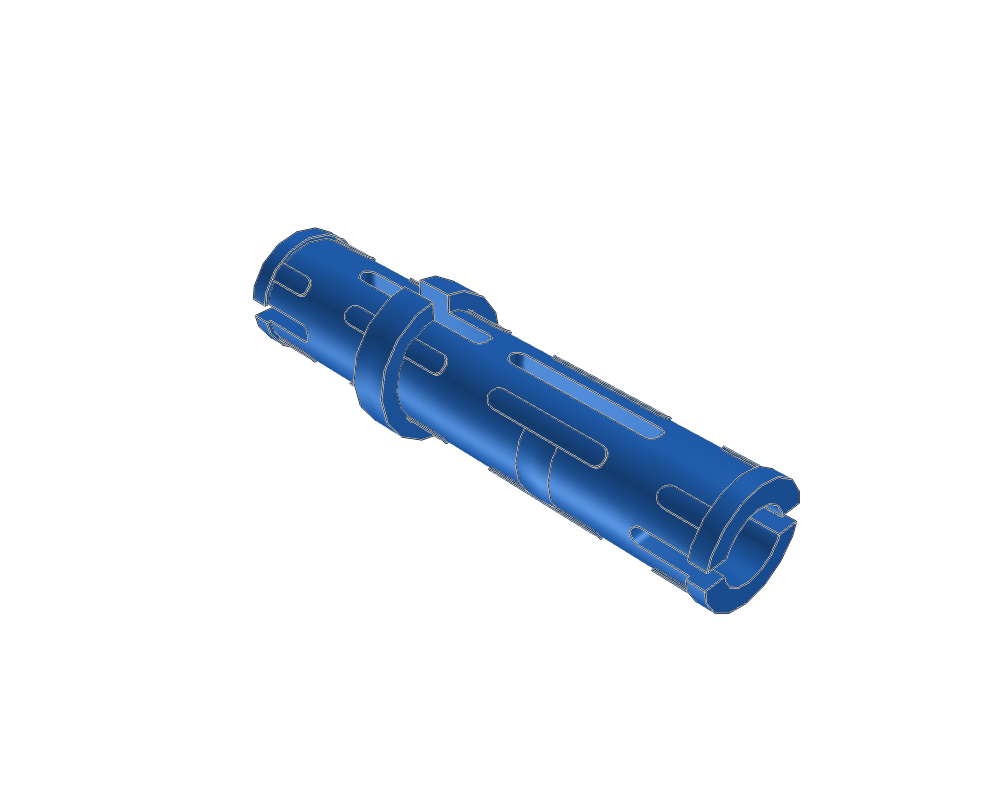
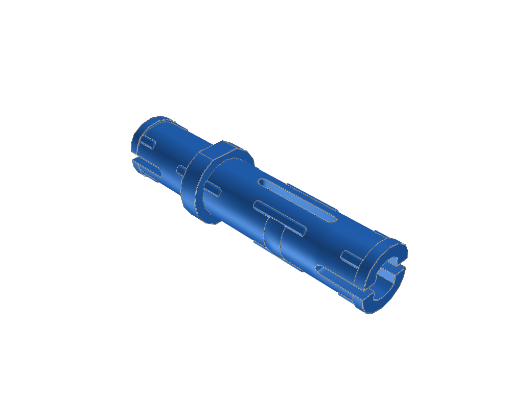
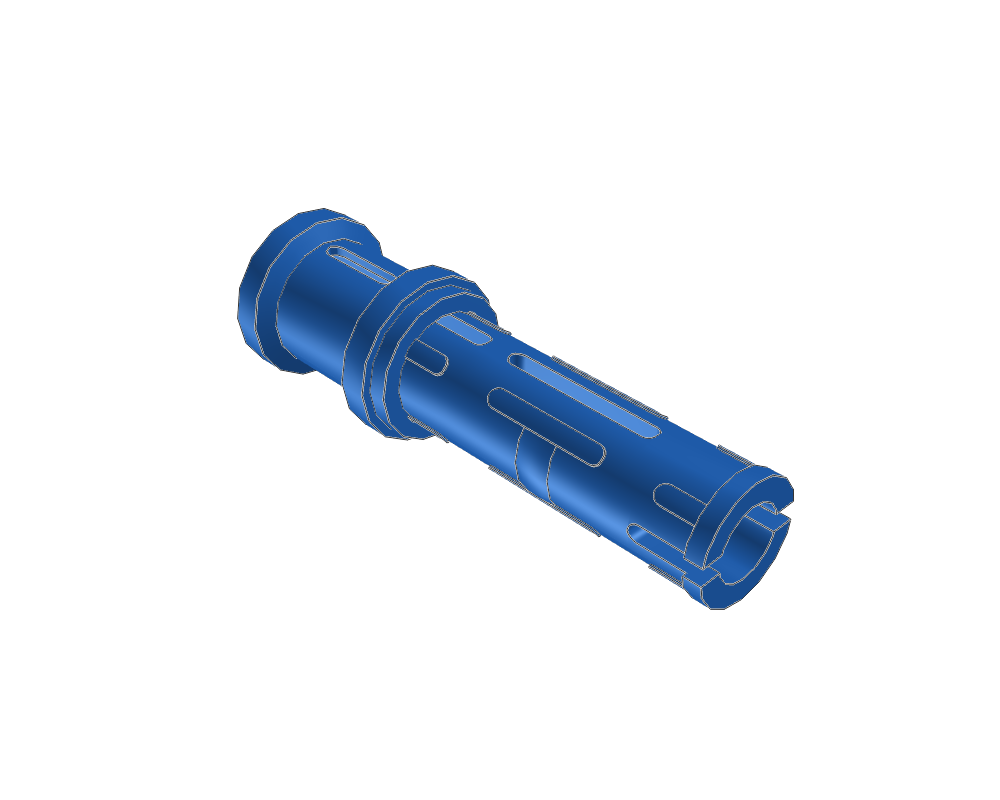
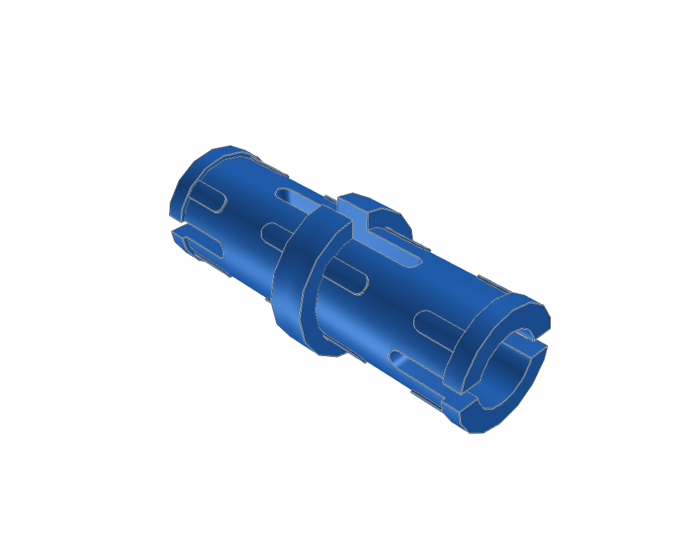
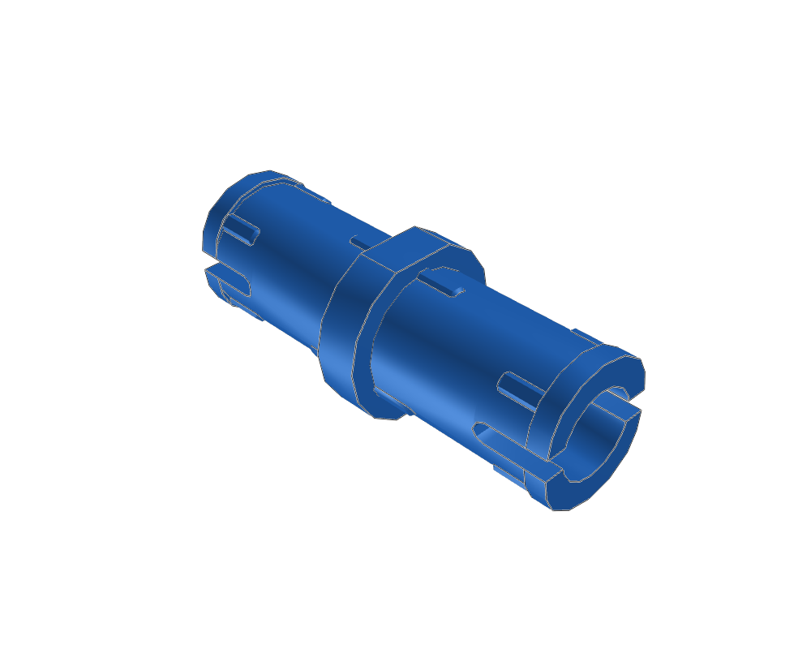

Technic Pin Long with Friction and Slot
65586558.dat · 60 × 15.602 × 16.0011 LDU
Inspect sourceActual library geometry. Each view is fitted independently: compare the listed dimensions, not image size. Bounds include studs and decoration; they are not stacking heights.

65586558.dat · 60 × 15.602 × 16.0011 LDU
Inspect source
4292442924.dat · 60 × 14.7824 × 16 LDU
Inspect source
3205432054.dat · 60 × 18 × 18 LDU
Inspect source
27802780.dat · 40 × 15.602 × 16.0011 LDU
Inspect source
6133261332.dat · 40 × 14.7824 × 16 LDU
Inspect source